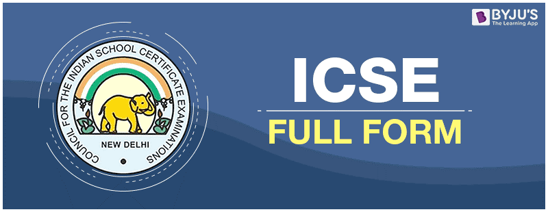

So, you must be curious... why not a norml Diary???... welll the thing is I am really very much careless.. So, I thought of why not an online diary it won't even get lost :)I am dyamm smart... heheheheheheh :)
&o,, I was in the 2021-22 class 10 batch!!! yeah you got it... people say we were the lucky batch.. but let me share with you what we really went through :)... Well so I guess you guys know, our ICSE exams were divided into two semisters.. well here is the catch our SEMISTER 1 examination was supposed to be online and what the council does is... just when we were mentally prepared for online examination ...they upload a NOTICE on social media claiming that our online examination is cancelled and our SEMISTER 1 will be held offline they did this just before 1 week before our EXAMS and yah this was kinda out of nowhere situation
Well just give it a thought, like what we really went throught at that moment..and people call us luckyAnddd, now comes SEMISTER 2... and we get to know that our SEMITER 2... might be cancelled but we are not that lucky :0... like seriously!!! and like we even got some rumors that our SEMISTER 2 might get cancelled and YEAH we were really happy like really really happy SO,yeah we got all our hopes up again... but the Examination was still conducted... and it went horrible!!! ... and after all this shit it was time for the RESULTS :')
Nowww, you guys really wanna know how much I got... Isin't it??? 